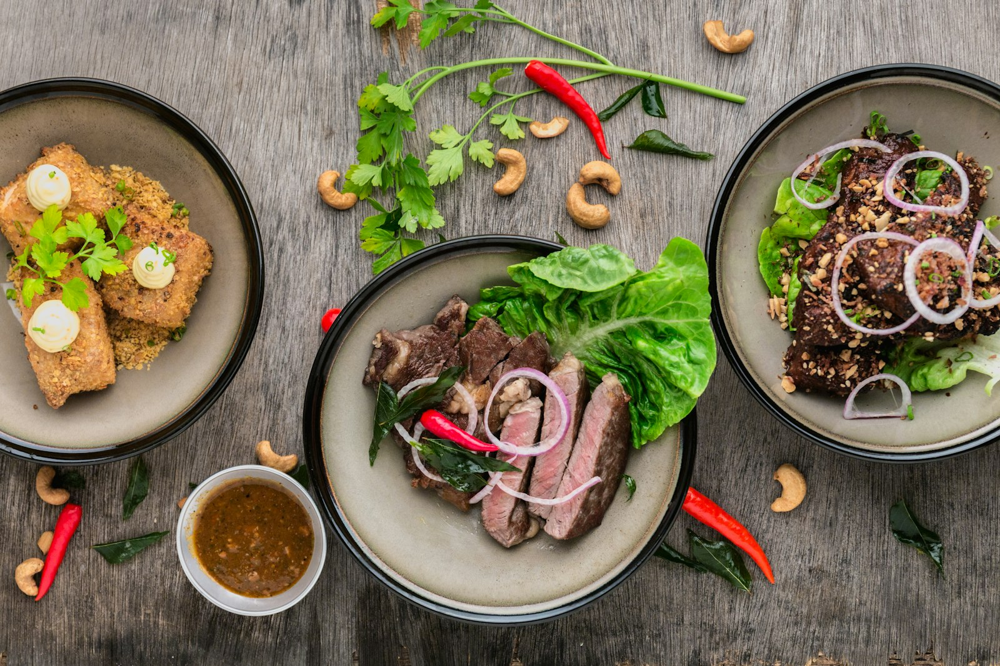
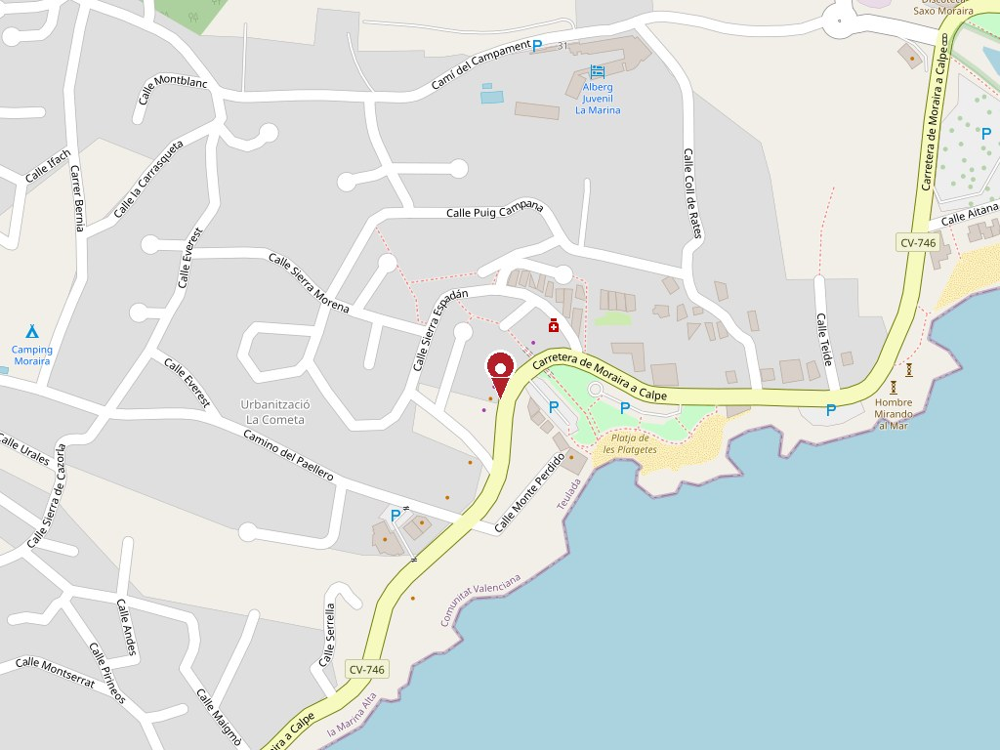
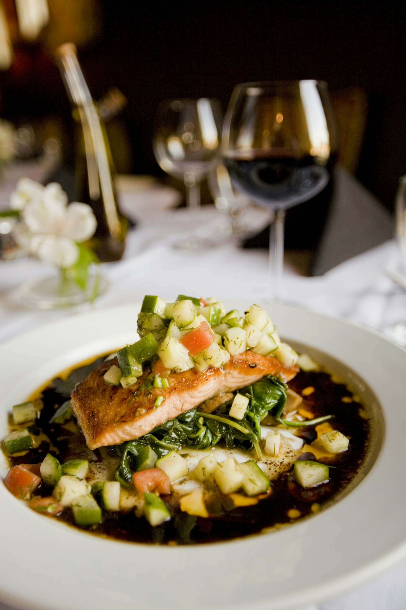

Solete Guía Repsol · Bar
Billy's Moraira
Bar y restaurante en la carretera de Moraira a Calpe, 132. Esta página es una demo para mostrar cómo podría verse una web sencilla del local. No es el sitio oficial.
A bar and restaurant at Ctra. Moraira a Calpe, 132. This page is a demo of how a simple site for the place could look. It is not the official website.

01 / Mesa
Carta
Menu
No hay una carta oficial publicada en una web propia. Lo que sigue son placeholders, salvo una nota tomada de Guía Repsol.
There is no official menu published on a first-party website. What follows is a placeholder, apart from a note taken from Guía Repsol.
Guía Repsol, que le otorga un Solete, recomienda pedir el figatell de sepia y cualquier plato fuera de carta. La ficha indica que hay opciones para celíacos y opciones veganas.
Guía Repsol, which awards it a Solete, recommends asking for the cuttlefish figatell and any off-menu dish. The listing says there are gluten-free and vegan options.
02 / Turno
Horario
Opening hours
El horario concreto no está confirmado aquí: las fichas públicas no coinciden. Conviene preguntarlo al reservar.
Specific opening hours are not confirmed here: public listings do not agree. Please check when you book.
- Lunes
- [horario]
- Martes
- [horario]
- Miércoles
- [horario]
- Jueves
- [horario]
- Viernes
- [horario]
- Sábado
- [horario]
- Domingo
- [horario]
03 / Mesa puesta
Dónde estamos
Where to find us
Billy'sCtra. Moraira a Calpe, 132
03724 Teulada-Moraira

Abrir mapa interactivo (OpenStreetMap)
El marcador sigue el nodo de OpenStreetMap «Cafe Bar Billy», en el número 132 de la Carretera de Moraira a Calpe (Urbanització La Cometa, Moraira). Ver mapa más grande.
The pin follows the OpenStreetMap node “Cafe Bar Billy”, at number 132 on Carretera de Moraira a Calpe (Urbanització La Cometa, Moraira). View a larger map.
